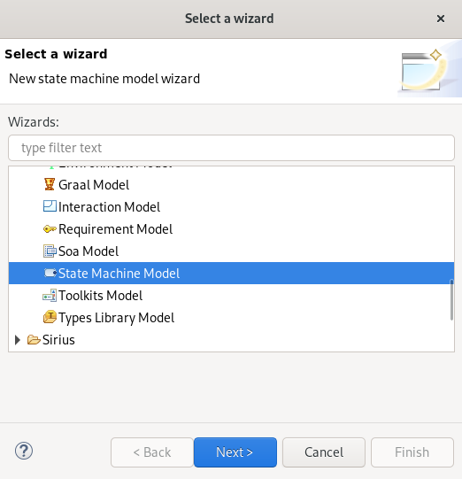
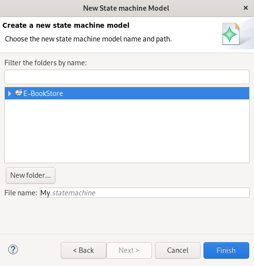
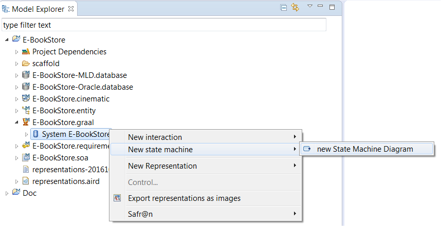
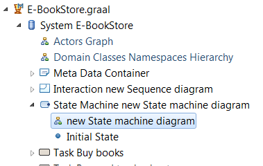
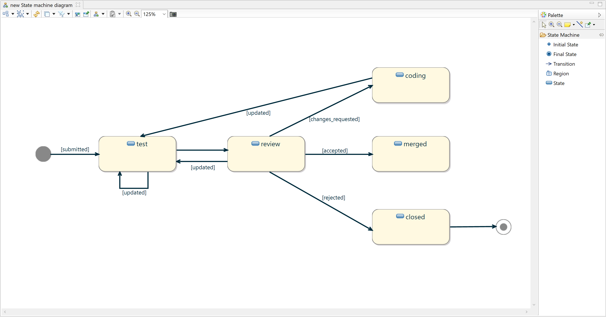
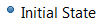
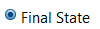
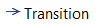
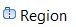
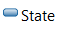

Copyright © 2008, 2026 Obeo - All rights reserved. This program and the accompanying materials are made available under the terms of the Eclipse Public License v2.0
Les diagrammes de machines à états permettent de définir des machines à états sur quasiment la totalité des éléments définis dans IS Designer, à l’exception du métamodèle Database.
Les diagrammes de machines à états manipulent des concepts très proches des diagrammes de machines à états définis par UML.
Un assistant de création de modèles de machine à états est accessible via le menu :
File > New > Other... > State Machine Model (catégorie IS Designer)

Cet assistant permet de définir :

Une fois l’assistant validé, le modèle est créé.
Pour créer un diagramme de machine à états, activer le point de vue
State Machine via le menu contextuel
Viewpoints Selection du projet ou du fichier
*.aird.
Une fois le point de vue activé, sélectionner New state machine dans le menu contextuel des éléments pour lesquels un diagramme de machine à états peut être créé.

Un objet
StateMachine et un diagramme de machine à états sont alors créés et visibles sous l’objet sélectionné.
Il est possible de créer autant de diagrammes de machines à états que voulu pour un même objet.

Étant donné qu’il y a très peu de contraintes sur l’emplacement d’un diagramme de machine à états, il peut être utile d’utiliser l’arborescence par point de vue pour le retrouver, comme décrit dans le chapitre ISD – Environment tooling de la documentation.

Les éléments suivants sont affichés sur le diagramme :
Les outils fournis par la palette sont :
|
 |
Création d’un état initial. |
|
 |
Création d’un état final. |
|
 |
Création d’une transition entre deux états. |
|
 |
Création d’une région. |
|
 |
Création d’un état. |